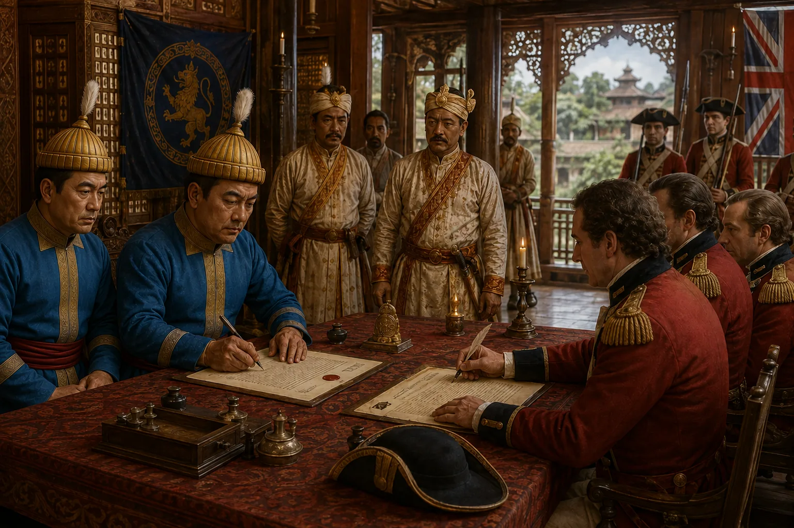

The Ahom-British Commercial Treaty of 1793
February 1793 · The Moamoria risings

First formal commercial agreement signed between Ahom monarchy and the British East India Company, regulating customs and trade between Bengal and Assam.
Sources have not yet been catalogued for this record.
People: Captain Thomas Welsh, Gaurinath Singha (Suhitpangphaa)
Open this scene in the interactive archive · Follow this event on MAP